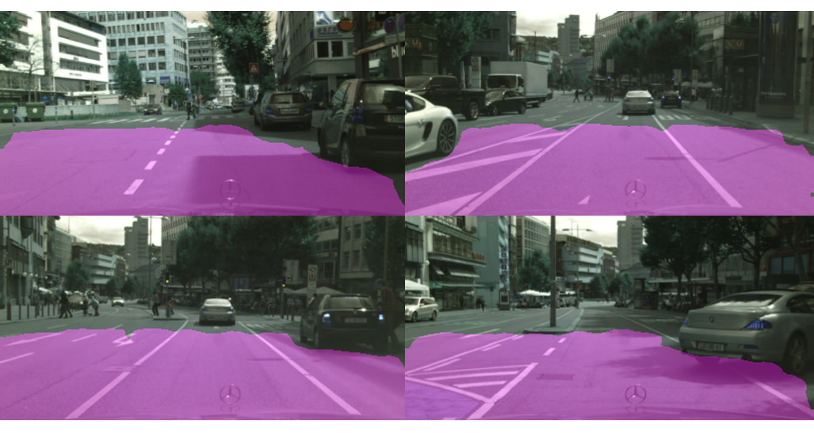

Sarah Hatami Rostami
I am a graduate student researcher exploring cutting-edge methods in Artificial Intelligence.
My research interests include deep learning, computer vision, label-efficient learning, Generative Models, and autonomous systems.
sarahatami121@gmail.com LinkedIn Github
Education
K.N. Toosi University of Technology, M.Sc. in AI & Robotics, GPA: 3.77/4 (2021–2024)
Sharif University of Technology, B.Sc. in Computer Engineering, GPA: 3.62/4 (2015–2019)
Publications & Preprints

Unsupervised Road Segmentation Leveraging Scene Geometry for Monocular ADAS Systems,
with Dr. Behrooz Nasihatkon
(under preparation)
Selected Skills:
Computer Vision | Deep Learning (DNNs, CNNs, GNNs) | Reinforcement Learning | Recommender Systems
Transformers | LLMs | Python (Pytorch, Tensorflow, Sklearn, NumPy, Matplotlib)